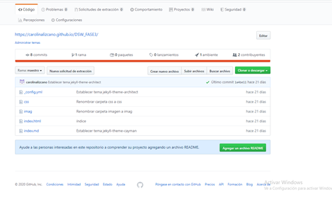

OVI DISEÑOS WEB
UNAD

LECTURAS
Lectura 5
GITHUB PAGES
Es una forma de alojar nuestros proyectos en una página web, sin necesidad de tener conocimientos en servidores, de hecho, es algo muy sencillo y que no tomara más de 5 minutos en configurar.
Lo primero que debemos tener en cuenta a la hora de publicar nuestro proyecto en GitHub Pages es que nuestro repositorio deberá tener en el directorio raíz una página llamada "index.html". Si nuestro repositorio ya cuenta con el archivo inex.html lo único que tendremos que hacer es ir a nuestro repositorio y pulsar en settings

Aquí podremos renombrar nuestro repositorio, debemos tener en cuenta que el nombre de nuestro repositorio es el que tendra nuestra página, Nos desplazamos hacia abajo hasta encontrar el apartado GitHub Pages, este por defecto esta desactivado (none), seleccionamos master Branch y guardamos los cambios
Una ves descargado ejecutamos el instalador, este nos pedirá permisos de administrador, se los concedemos y nos aparecerán las siguientes dos ventanas a las cuales damos en siguiente
i ya tendremos publicada nuestra pagina en GitHub Pages, y en este mismo apartado GitHub nos proporcionara el link para poder acceder a nuestro sitio web.